简介 Introduction
宝岛一村，赖声川经典之作，温暖与变迁共存的时代，几代人的颠沛流离与爱恨情仇。这是一个不说很可能即将消逝的故事，于是我们要将这故事向你娓娓道来。剑桥中文剧社年度大戏--《宝岛一村》即将上演，我们邀请你与我们一起成为这个眷村的一员。
The Village is the most popular Chinese play since 2009, and has been performed over 200 times in all parts of the world. It features three generations of ordinary military families after the retreat of the Republic of China to Taiwan, with an impressive timespan of 60 years from 1949-2006. The Cambridge University Chinese Drama Society is looking forward to presenting you with this magnificent play.
原作：表演工作坊
预告片 Trailer
花絮 Behind the scenes
剧照 Gallery

演员阵容 Cast
-
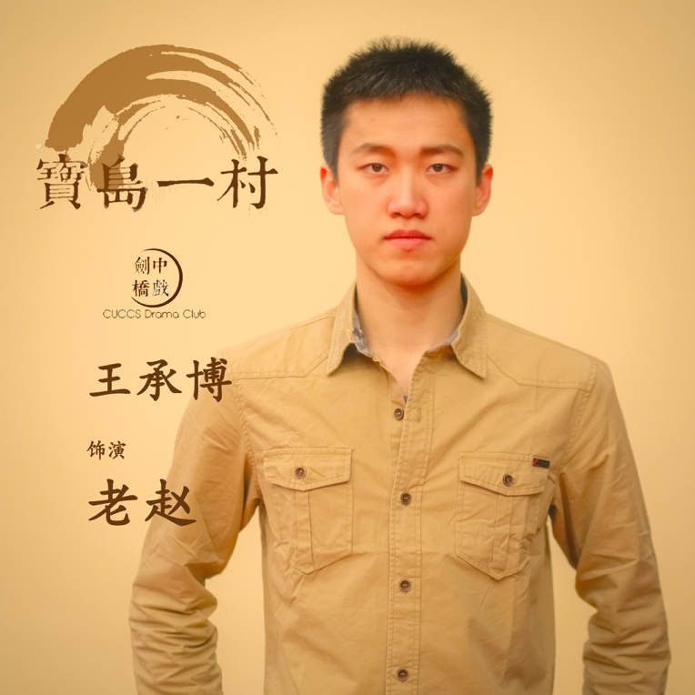
王承博 饰演 老赵
老实而善良的老赵，因为政治的动乱，与妻子以及丈母娘一起随着国民党来到了宝岛居住。没想到这一住就是一辈子，一家人变在这里扎下了根。作为赵家的顶梁柱，他的无私与淳朴也让他成为宝岛一村不可或缺的人物。
Driven by political instability, the honest and amiable lao zhao, moved to Taiwan with his wife and mother in law. He never knew he would spend the rest of his life here. Being the backbone of his family, his generosity and candidness makes him an important figure in the village.
“这里就是家，你们都是我的孩子，宝岛一村就是你们的家” -
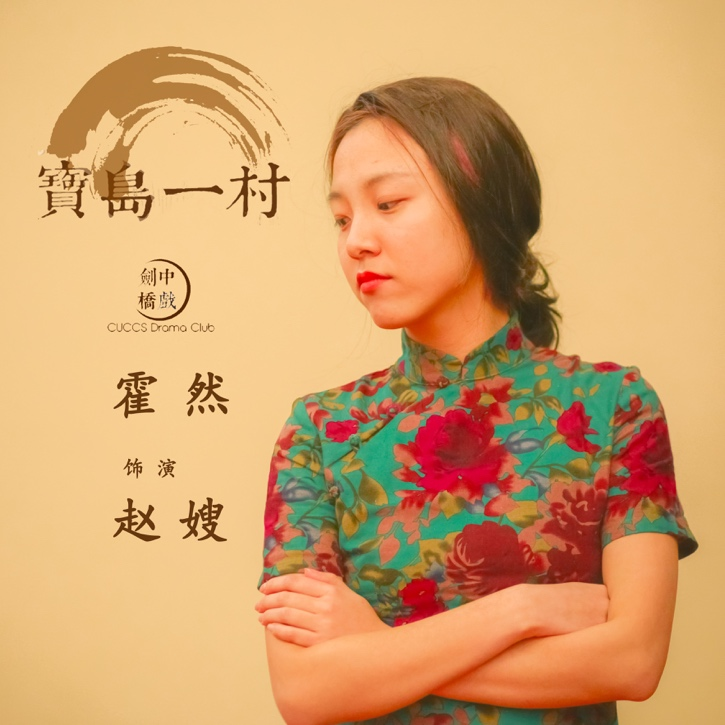
霍然 饰演 赵嫂
本是北平娇生惯养的大小姐，却被宝岛的贫苦生活渐渐磨去了原本娇纵的性子。尽管这个女人把自己逃离宝岛，改变命运的愿望强加在了自己的孩子身上，但她却最终意识到，宝岛一村本就是她的家。
Born influential and luxurious in Peiking, this young lady had her arrogance chiseled away by the bitter conditions in Taiwan. Despite imposing her dreams of escaping Taiwan and changing her destiny on her children, she eventually realized that the village is her home afterall.
“我担心你找不到回家的路。我就把这门牌拆下来了，到时候就会贴在新家门上，这样你就能找到回家的路” -
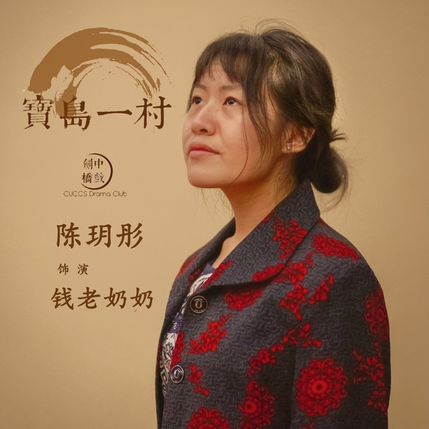
陈玥彤 饰演 钱老奶奶
赵嫂的母亲，跟着女儿与女婿在动乱中移居在宝岛一村。她的身上承载着对故乡所有的思念，她做得一手好家乡菜，那就是她思念的载体。她终于能够把那些爱与思乡之情，一代代传承下去。
In the mist of the political chaos, zhao sao's mother in law moved to the village with her daughter and lao zhao. She is the embodiment of the craving for her homeland, carried by her fine homeland cuisine. She would finally be able to pass on the love and nostalgia to generations after generations.
“回不去了...回不去了...我是永远回不去了老家了!我教你啊，来，我们来做天津包子...” -

丁昱铮 饰演 周宁
内敛正直的飞行官，一个肩负着责任与使命感，连战友的遗孀都能全力照料的人。遵循自己的原则与承诺，隐瞒起内心的痛苦与挣扎。如此复杂而矛盾的他，也只不过是个会为身边人无私奉献的普通人而已。
The reclusive yet principled flight officer is characterized by his responsibility and sense of duty. He keeps his ethics and promises, meanwhile tucking away his inner pain and struggle. Yet despite being so complex, he is only an ordinary individual, willing to make sacrifices for people around him.
“为什么我还活到今天?也是因为你说过的一句话:人生要开心，尽量开心......即使只剩下一个人，也要开心” -
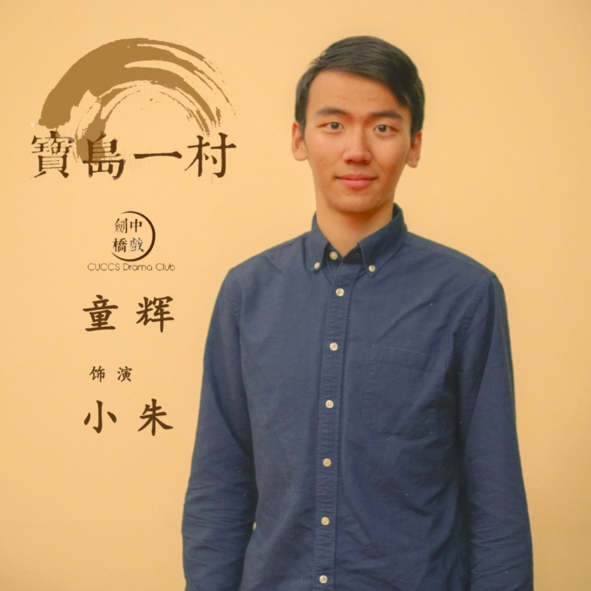
童辉 饰演 小朱
直肠子粗神经，他是为宝岛乏味的生活添色不少的人。有点小缺德，耍些小贫嘴，也有自己独特的教育孩子的一套。
Straight forward and simple minded, he is the spice of life in the village. A little salty and a little gabby, he has his own ways of educating children.
“这是什么道理?这样说的话全世界所有不见的人都在一块啦?! 孙中山和袁世凯在打麻将!希特勒在旁边倒茶?张作霖在那边点鞭炮!干脆梅兰芳直接来上一段!” -
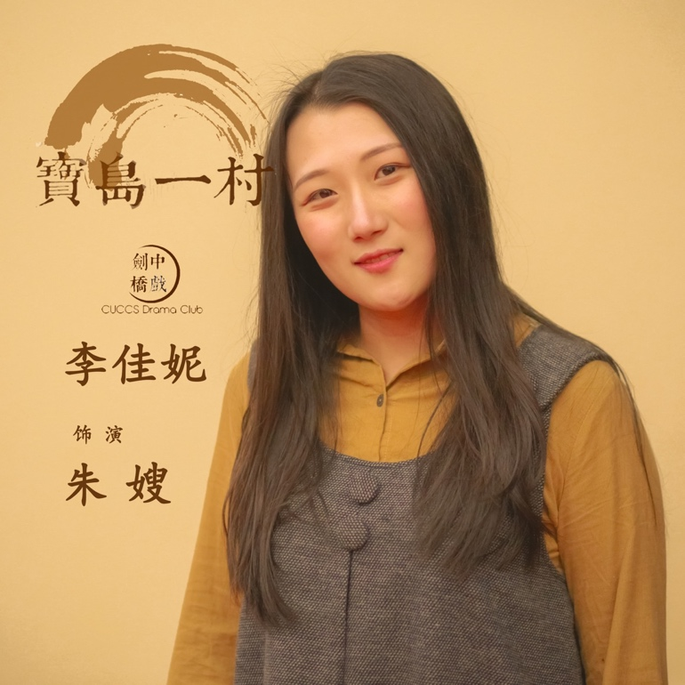
李佳妮 饰演 朱嫂
跟所有平凡的妇女一样质朴善良，却拥有自己的不平凡。真诚对待身边的每一个人，勇敢且宽容。她制作包子的手艺在眷村那可是出了名儿的，却谁也不知，这是她以此纪念已故之人，用来表达爱的方式。
Kind and candid as any other ordinary woman, she has her very own peculiarity. She treats everyone with honesty, bravery, and compassion. The buns she makes are famous throughout the village, but nobody knows this is her unique way to express her love for the deceased.
“天气开始变凉了，我照你的意思，四分肥肉，六分瘦肉。我做给你吃。你吃吃看，是不是这个味?这是你教我做的...包子...” -
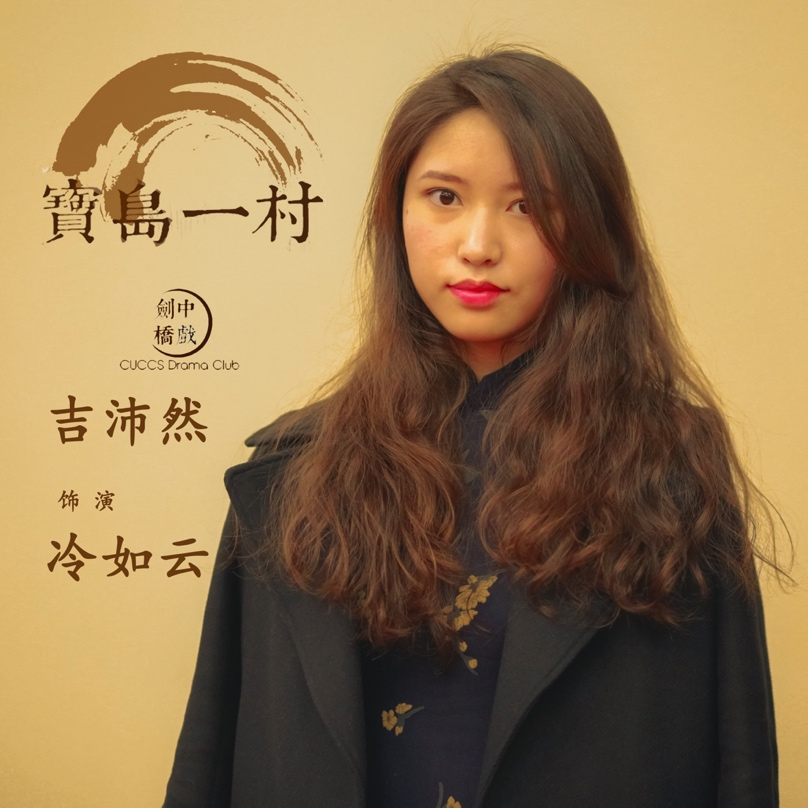
吉沛然 饰演 冷如云
生活的突然变故，为她的一生染上了本不该存在的悲剧色彩。而她没有选择被打垮，而是继续背负自己的痛苦，隐忍顽强地生活下去。仍然对未来抱有期许的她，拥有的其实是人类最柔软坚韧的内心。
A sudden change in her surroundings casted a shadow of misfortune on her life. Yet she refuses to be beaten. She endures the pain and carries on with her life. Still full of hope for the future, she has the most malleable and tough of all spirits.
“我回去做什么?还不是一样，我才不要回去了。要走，那走更远好了” -
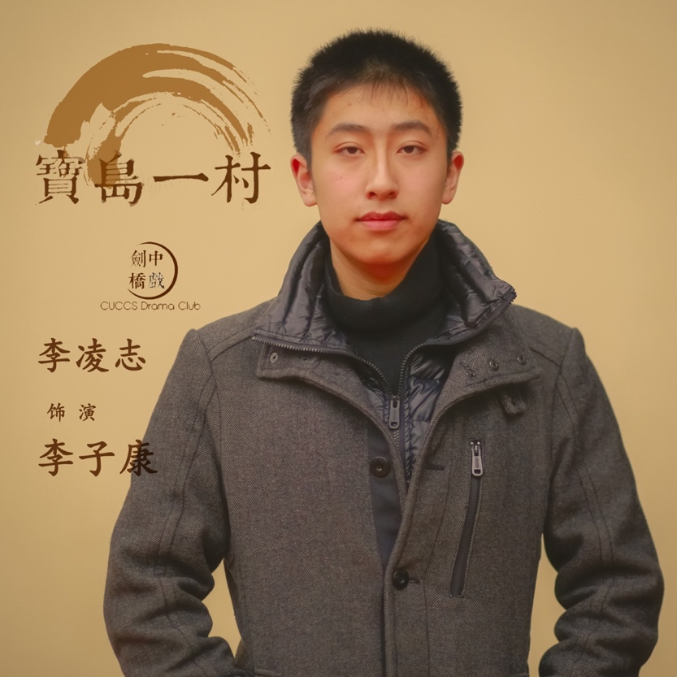
李凌志 饰演 李子康
错误的时间，错误的地点，错误的机缘，造成了无法挽回的局面。他的一生坎坷，也为别人带去坎坷。现实总不尽人意，他只不过是那个时代的无数受害者之一。
Wrong time, wrong place, wrong event, altogether makes the situation unsalvageable. His trecherous life is merely a reflection of what millions of people of his era experience.
“我想了好多年，想来看你，我没有别的意思，我就是想见你，就算是躲在路边，看看你过一趟马路一次，我这辈子也就甘愿了” -
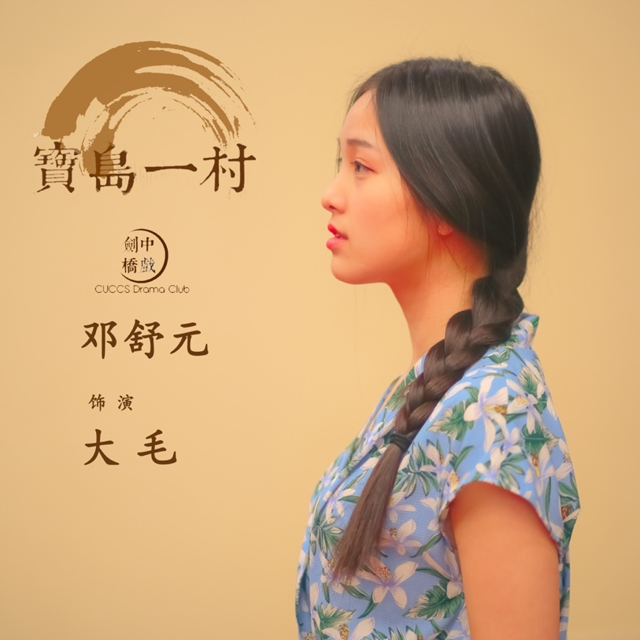
邓舒元 饰演 大毛
眷村里长大的女孩，对外面的世界有本能的憧憬和向往。对于改变自己的命运，踏入眷村以外的生活，她有时无比勇敢，有时却无比胆怯。她是那一代年轻人的影子，说不定也是你我的影子。
Grown up in the village, this girl has an inate thirst for the outside world. Faced with the choice to step outside the village and change her destiny, she is both fearful and fearless. She is a typical young person of that generation, and perhaps a mirror of you and me.
“那艘船早就开走了，我们没搭上。没搭上就是没搭上。不然怎么办?” -
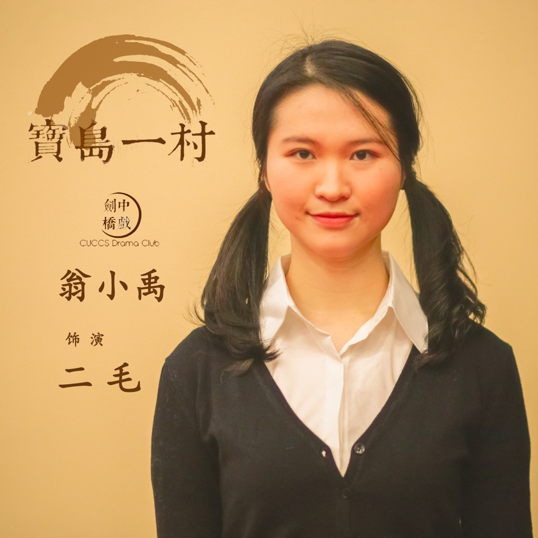
翁小禹 饰演 二毛
和姐姐大毛一样，是同样努力着想要走出眷村的少女。她有过希望，也有过绝望。宝岛一村是她的牢笼，但也同样是她深爱的故乡。
Like her older sister da mao, she craves to leave the village. She has times of hope, but also times of desperation. The village is her cage, but it's also her loved homeland.
“这围墙里都是假的，外面才是真的! 这边所有的人都走不出去!” -
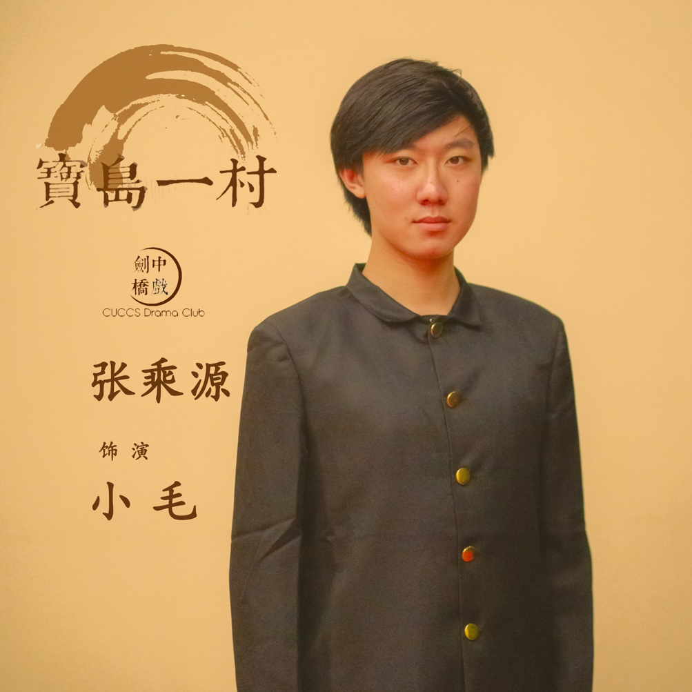
张乘源 饰演 小毛
赵家最小的儿子，单纯又顽劣，机灵又直率。看样子没心没肺，吊儿郎当，其实对于家人有着极强的保护欲与责任心。宝岛一村是他要努力守护的家园，他一直都坚信这一点。
The youngest son of Zhao's family, naive and playful, witty and truthful. He could appear unreliable, but in fact he would do anything to protect his family. The village is his home, and he is determined to protect it.
“等一下我们三个人冲进去，把我姐救出来，然后我们就砸店，放火，回家!” -

陈汉雄 饰演 大牛
朱家的大儿子，血气方刚，满怀理想。他也许是眷村最勇敢的那个，作出了改变人生的抉择，向未知与崭新伸出手。得到了掌握自己命运的权力，却也随之失去了宝贵的东西。
The oldest son of Zhu's family, he probably is the bravest one in the village. He makes the choice which could change his life and moves fowards to the unknown tomorrow. Although he grips his own destiny, he also loses valuable things.
“有一天，等我们再见得时候，你就知道了” -
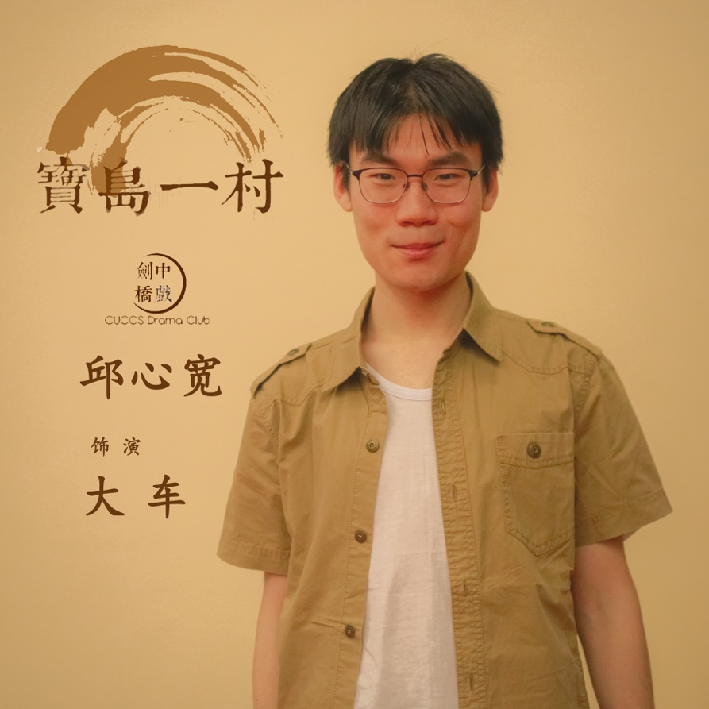
邱心宽 饰演 大车
朱家的二儿子，有些憨厚，有些傻气，有些莽撞。曾被挫折打倒，从此蜷缩在眷村的小世界里。看似叛逆的外表下，其实有着一颗安于现状的内心。
The second son of Zhu's family, a little simple and honest, a little audacious. Under the disguise of his rebellion, he has a heart content with things as they are.
“你小声一点，你真的会被抓起来，跟你爸一样!” -
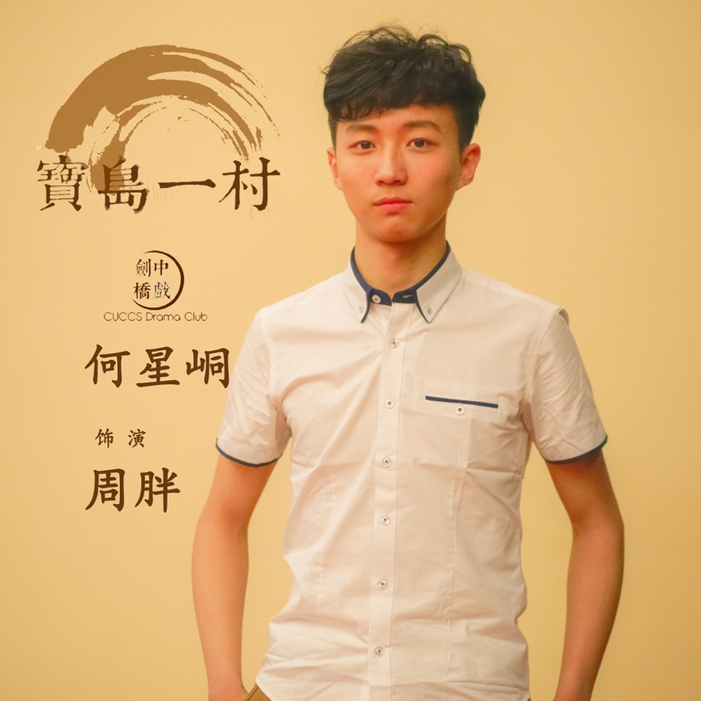
何星峒 饰演 周胖
如云的儿子，一个带着傻气，胆小怕事，十分顽皮的普通孩子。总是恶作剧，总是闹笑话。看似单纯无知，却因为自己的身世，背负着旁人难以想象的压力与沉重。
Son of ruyun,a timid and naughty child. He always makes jokes. However, behind his innocence, he bears unimaginable burden with him due to his sad story.
“但是你什么都不跟我说! 你们什么都不跟我说! 我做这些数学干什么? 一点意思都没有!” -
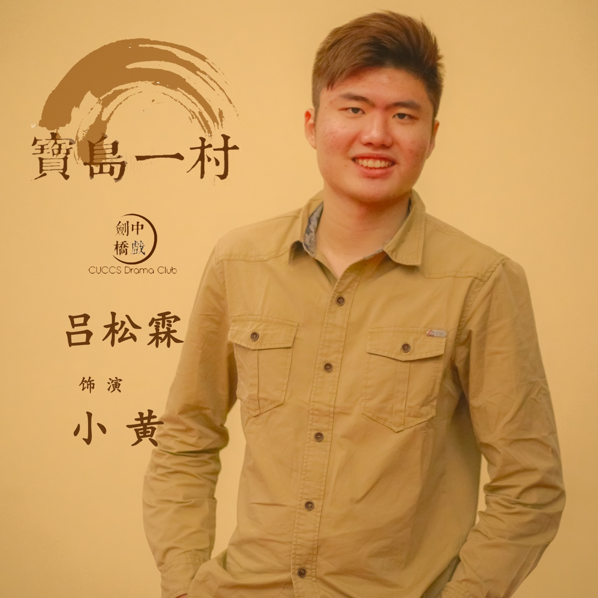
吕松霖 饰演 小黄
木工店的老板，一个善良又老实的本地人。他做出的东西，见证了眷村与人们的成长与变迁。宝岛一村是不可以没有他的，因为他不仅在见证，也在参与着眷村一代又一代的起落。
Owner of a carpenter shop, a kind and honest local. He witnesses the growth and changes of people in the village. He not only witnesses, but also acts as an indespensable part of the life here.
“好了! 你是讲完没? 答应人家的事就要好好做完，你管他多少!” -
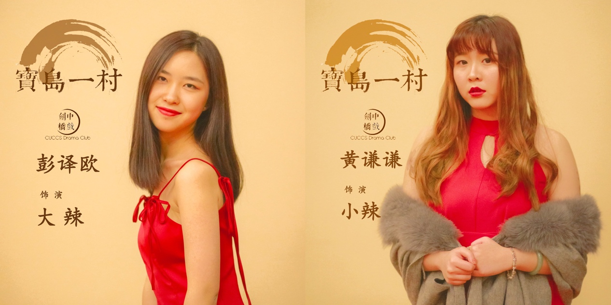
彭译欧 饰演 大辣
黄谦谦 饰演 小辣
大小辣这对姐妹，是宝岛一村最亮丽的一道风景线。她们耀眼又特别，大家既排斥她们，也忍不住被她们所吸引。这不，只要她们迎面走来，又有谁可以把自己的视线从这姐妹俩的身上移开呢？
Dala and xiaola are the most attractive girls in the village. They are shiny and special. People don't want to get in touch with them but are also attracted by them.
“朱太啊，你出来看看大辣小辣啊！看看什么叫彩色啊!”